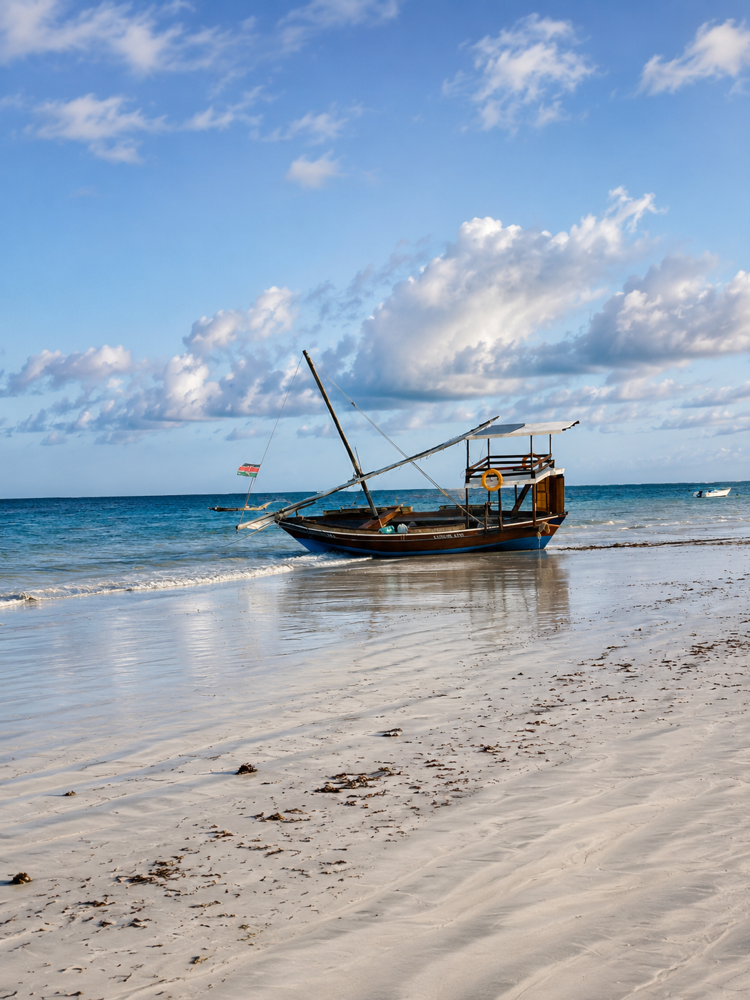
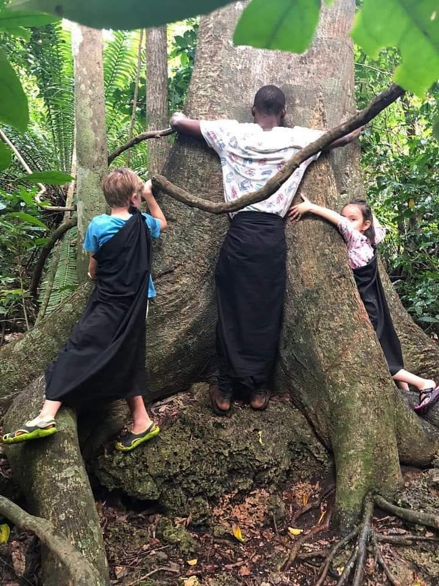
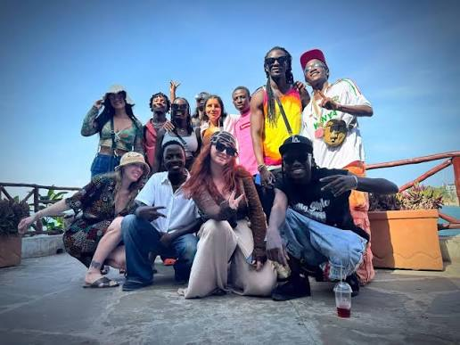
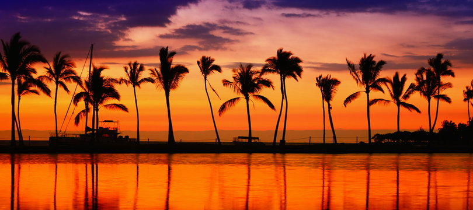
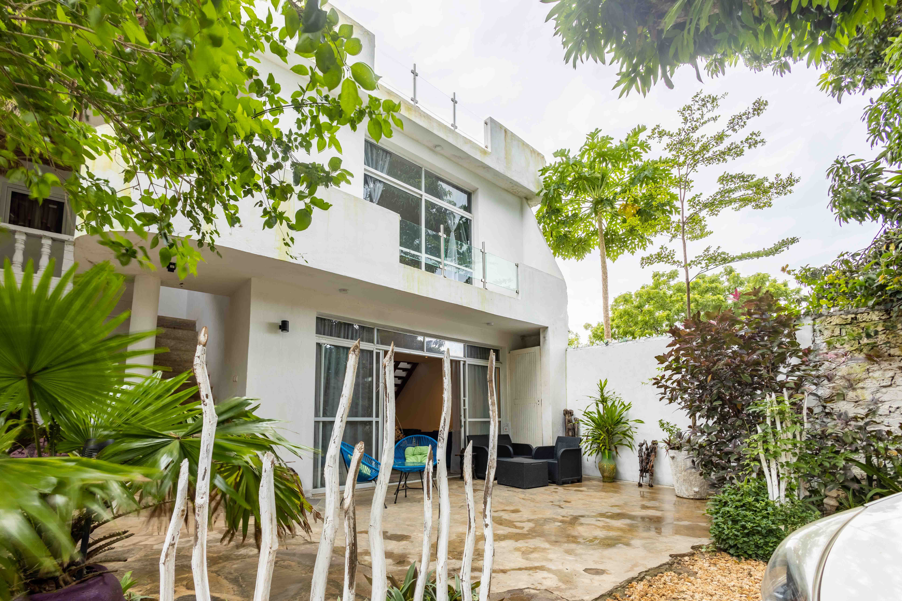

Dhow crossings, dolphins at sunrise and sandbanks that only reveal themselves when the water pulls back.
Third Tide · Adventure
Once you've settled in and found your style, the coast asks to be explored by water. These four excursions are the ones we return to again and again — chosen for the moments they make possible, not just the places they visit.

A quiet paddle inland, away from the open ocean, through mangrove channels where the water turns glassy and the birdlife takes over. A slower, greener side of the coast most visitors never see.

Wake before sunrise to watch dolphins move through the channel, then drift into Wasini's coastal island vibe — coral gardens, a Swahili seafood lunch, and an afternoon that runs on island time.

A small tidal island split evenly between untouched forest and open sand. At low tide you can walk the reef flats; at high tide, the island closes back in on itself and feels entirely private.

Further south, where the Ramisi River meets the ocean — a sandbank that appears and disappears with the tide, a mangrove boat ride, and a village that still moves at the pace of the water around it.
Ready When You Are
The Five-Day Coast Adventure
One carefully curated journey. Local stays, hidden experiences and meaningful connections — no planning required.
Plan Your Escape